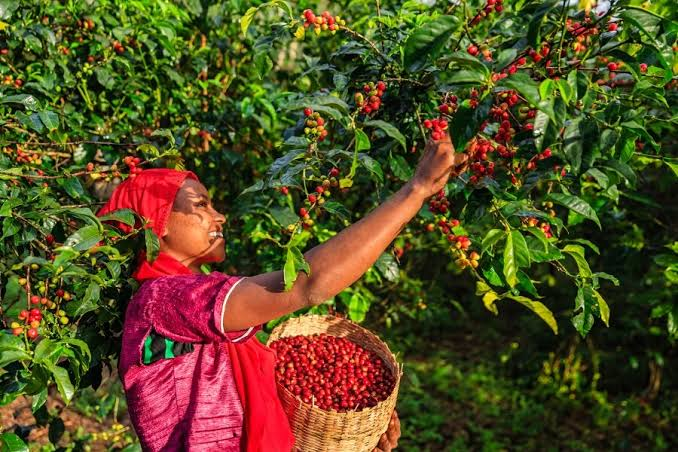

Welcome to Green Hills Coffee Plantation
Green Hills Coffee Plantation is a farm the south west side of Kenya owned
by a wonderfull family.We are dedicated to producing high quality,sustainable
coffee while preserving our beautiful environment for visitors,tourists,and
coffee from around the world

learn about coffee
contact the plantation
Coffee Varieties
Arabica
Robusta
Barian
Ruiru 11
Coffee Production Process
Our coffee goes through five careful stages
Planting-selecting and planting high-quality seedlings
Pruning and Maintenance-caring for the young trees
Harvesting-Hand picking ripe coffee cherries
Processing and Drying-Washing and sun drying the beans
Packaging-Sorting,grading and packaging for market
Plantation Activities
Pruning
Regular cutting of excess branches to improve air circulation,
sunlight penetration,and to increase coffee yield and quality
Harvesting
picking ripe coffee beans
Drying
Spreading coffee beans under the sun for several days until
the moisture content is perfect for storage
©:2026 Green hills coffee plantation Nairobi